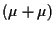
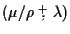
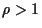
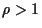

Ein-Fünftel-Regel/
1/5-Regel |
Regel zur Steuerung der
Mutationsstärke
in der (1+1)-ES:
In Abhängigkeit
von der (gemessenen)
Erfolgswahrscheinlichkeit
Ps wird die
Mutationsstärke
nach einer gewissen Anzahl von Generationen vergrößert, wenn Ps > 1/5, und
verkleinert, wenn Ps < 1/5. |
Elitismus/Eliteselektion |
Eigenschaft von Selektionsmethoden, die ein Überleben des besten Individuums
garantieren |
Elter |
Individuum,
das aufgrund seiner
Fitness zur
Generierung von Nachkommen ausgewählt/selektiert wurde |
endogener Strategieparameter |
Strategieparameter, der der Evolution unterliegt, z.B. die
Mutationsstärke
in selbstadaptiven ES und EP |
entstochastisierte ES |
ES, bei der der tatsächlich erfolgte Schritt im Objektvariablenraum zur
Adaptation der
Strategieparameter
genutzt wird |
Epistasis |
Nichtseparabilität der Effekte einzelner Gene auf den Zielfunktionswert
(Zielfunktion)
bzw. auf die
Fitness des Individuums |
Erfolgswahrscheinlichkeit |
Wahrscheinlichkeit, daß ein Nachkomme einen besseren Zielfunktionswert
hat als sein Elter (nur für Mutation definiert) |
|
|
Evolutionärer Algorithmus (EA) |
Sammelbegriff für alle Varianten von (probabilistischen) Optimierungs- und
Verbesserungsalgorithmen, die der Darwinschen Evolution nachempfunden sind.
Optimalzustände werden durch schrittweise Verbesserung
auf Basis des Variations-Selektions-Paradigmas approximiert.
Die
Variationsoperatoren
produzieren dabei genetische
Diversität
und die
Selektion
gibt der Evolution die Richtung. |
Evolutionäre Programmierung (EP) |
Variante der EA, die wie die ES auf der natürlichen Problemrepräsentation
evolviert, Mutation, jedoch keine Rekombination als Variationsoperator,
und 
Turnierselektion
verwendet |
Evolutionäres Rechnen (EC) |
Berechnungen unter Verwendung von
Evolutionären Algorithmen |
|
|
Evolutionsstrategie (ES) |
Variante der EA, die i.d.R. in der natürlichen Problemrepräsentation
evolviert (keine Genotyp-Phänotyp-Abbildung für
Objektparameter)
und deren
Grundformen durch die
-ES
(sprich: ,,mü-Strich-rho-Plus-bzw.-Komma-lambda-ES``)
Nomenklatur charakterisiert wird. Hierbei ist  die Elternanzahl,
die Elternanzahl,
 die Nachkommenzahl,
die Nachkommenzahl,  die Mischungszahl (Anzahl der
Elternindividuen, die (multi-) rekombinativ einen Nachkommen generieren),
,,+`` bzw. ,,,`` die Art der
(Abschneide-) Selektion.
Ein Individuum besteht aus einem Satz von Objektparametern,
dem dazugehörigen Zielfunktionswert
(Zielfunktion)
und einem Satz von
(endogenen)
Strategieparametern.
Die ES verwendet
Mutation und
Rekombination
(falls  1$">)
als Variationsoperatoren.
die Mischungszahl (Anzahl der
Elternindividuen, die (multi-) rekombinativ einen Nachkommen generieren),
,,+`` bzw. ,,,`` die Art der
(Abschneide-) Selektion.
Ein Individuum besteht aus einem Satz von Objektparametern,
dem dazugehörigen Zielfunktionswert
(Zielfunktion)
und einem Satz von
(endogenen)
Strategieparametern.
Die ES verwendet
Mutation und
Rekombination
(falls  1$">)
als Variationsoperatoren. |
Evolvierbare Hardware (EH) |
spezielle Vorrichtungen, Schaltkreise oder Maschinen, die eine
Realisierung des Darwinschen Evolutionsparadigmas auf materieller Ebene
erlauben |
exogener Strategieparameter |
Strategieparameter, der während der Evolution konstant gehalten wird,
z.B. (i.d.R.) Populationsgröße, Lernparameter
|